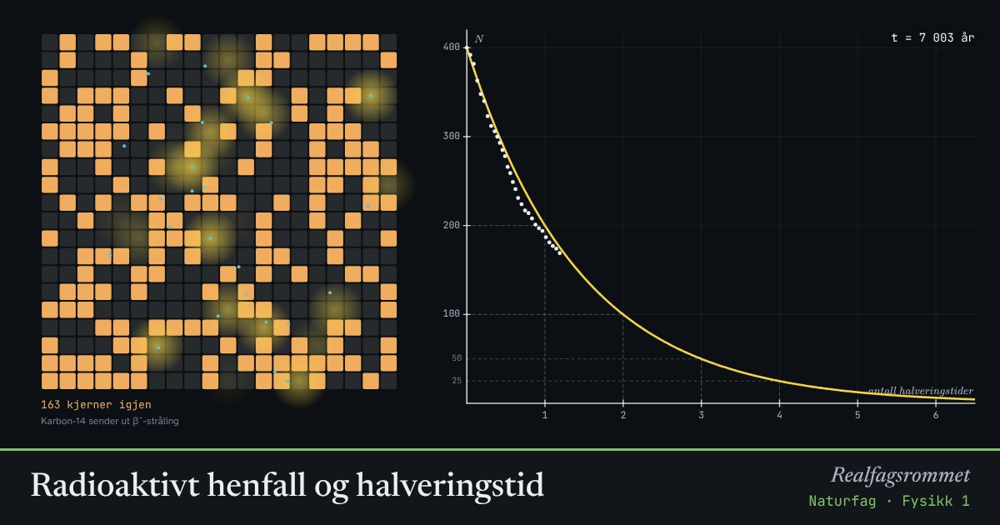

Radioaktivt henfall og halveringstid
Vi kan aldri vite når én bestemt kjerne henfaller. Men for mange kjerner er det helt forutsigbart: etter én halveringstid er halvparten igjen.
Start animasjonen
Formler
Om animasjonen
Hvert lite kvadrat er en kjerne. Hver kjerne har like stor sjanse til å henfalle i hvert tidsrom, uansett hvor lenge den har eksistert.
Den gule kurven er den teoretiske modellen. De hvite punktene er tellingen. Med få kjerner blir avviket fra kurven stort.
Karbon-14 brukes til å datere organisk materiale. Når en organisme dør, slutter den å ta opp nytt karbon, og mengden C-14 halveres hvert 5730. år.
Jod-131 kan slippes ut ved atomulykker. Det samles i skjoldbruskkjertelen. Derfor deles det ut jodtabletter.
Prøv dette
- Hvor mange halveringstider tar det før under 1 % er igjen?
- Et bein har 25 % av den opprinnelige mengden C-14. Hvor gammelt er det?
- Hvorfor er det tryggere å lagre radioaktivt avfall med kort halveringstid?
- Kjør flere prøver. Hvorfor blir tellingen litt ulik hver gang?
Kompetansemål
- Naturfag: Elektromagnetisk og ioniserende stråling, og helseeffekter
Mer om stråling, atomer og kjerner
- Det elektromagnetiske spekteret
- Stråling fra varme legemer
- Stråling og overflate: hvorfor blir svart varmere?
- Drivhuseffekten og jordas strålingsbalanse
- Rutherfords spredningsforsøk
- Bohrs atommodell og linjespektre
- Fusjon, fisjon og stjernenes grunnstoffer
- Stjernenes liv og grunnstoffenes opphav